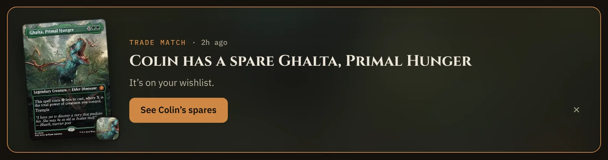
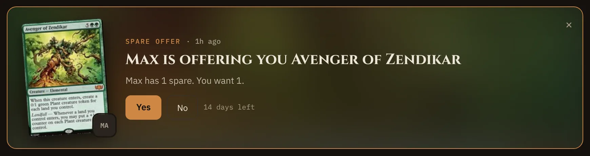
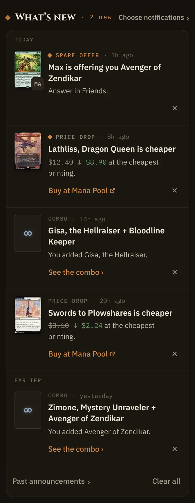
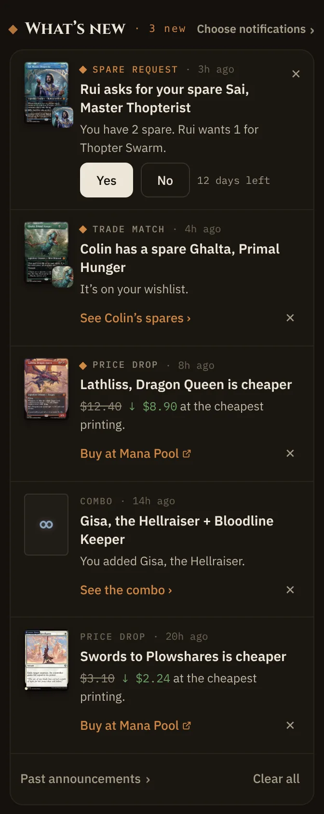
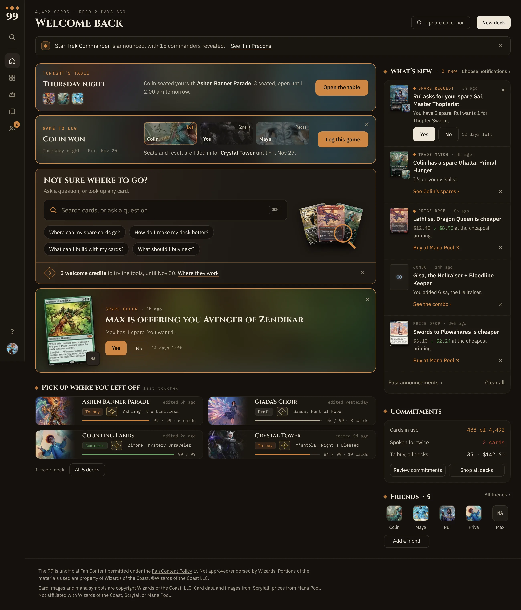
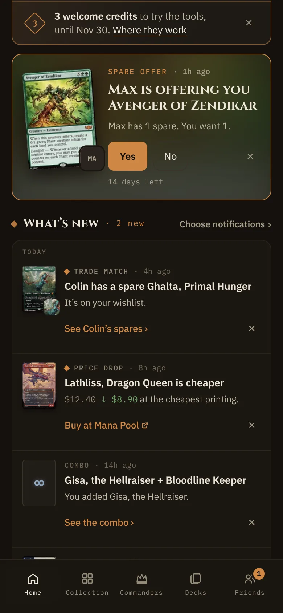
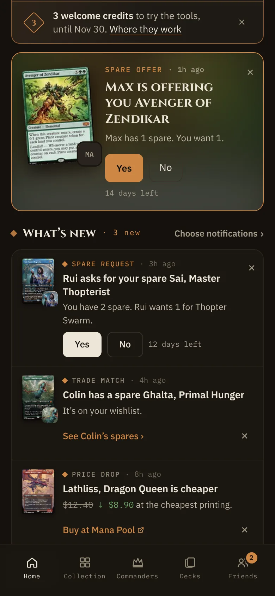
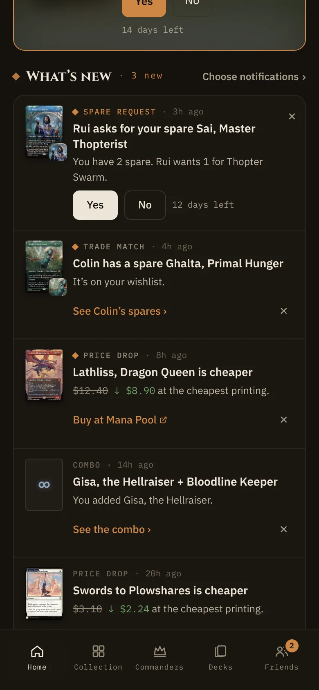
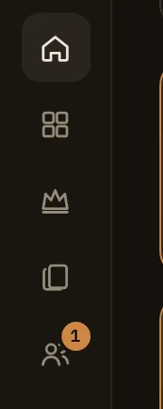
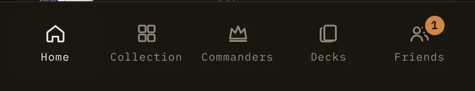

Max offers the reader Avenger of Zendikar. Today against proposed, at 1300 and 390, then the Friends badge and the offerer's side. Rendered from main bb4832f8 with the shipped components; Avenger of Zendikar stands in for Nissa, Worldsoul Speaker, whose art is not in the fixtures.
14 · One lead for an ask and an offer (R11)
The shipped lead already draws an offer: kicker Spare offer, Max is offering you Avenger of Zendikar, Max has 1 spare. You want 1., Yes, No, 14 days left. An ask draws the same story with its own kicker and line. No new component.
Why desktop showed a row: the lead is the highest-ranked unseen item (leadStory), not a width rule. When a trade match outranks the offer, the offer drops into What's new as Answer in Friends. with no presses. That is the desktop frame you saw.
Proposed rank: anything waiting on the reader with a deadline (an offer or an ask, unanswered, open) leads over news, the newest first. So the offer leads at both widths (Q16).
The ✕ moves to the corner, as on Game to log (R9): Yes, No and the days left own the action line, and the text keeps 26px clear of the ✕ (Q17).
A second ask that does not lead answers in its row: the detail line, then the shipped row presses (36px Yes, No, days left), ✕ in the row's corner. Answer in Friends. retires on Home (Q18). Answering lands the shipped receipt in place.
Q16 · Does an offer or ask always lead over news?
A: yes, anything waiting on you with a deadline leads, newest first (drawn). B: keep today's rank, and the offer can sit in What's new.
Recommended: A. It is the only item that expires and needs the reader's answer; it should not depend on what else came in that day.
Q17 · Where does the lead's ✕ go?
A: the card's top right corner (drawn), as on Game to log. B: at the end of Yes, No and the days left, as shipped.
Recommended: A. Your rule from R9: a press and its ✕ never share a line.
Q18 · A non-leading ask or offer in What's new
A: answer in the row: Yes, No, days left (drawn). B: keep Answer in Friends. with no press.
Recommended: A. One place to answer from Home, the same presses as Friends' Waiting on you.
The lead · desktop 1300

Today
When a trade match outranks the offer, the trade match leads.

Proposed
The offer leads; the ✕ in the corner; Yes, No, 14 days left alone on the line.
What's new · desktop rail

Today
The offer as a row: Answer in Friends., no presses.

Proposed
Rui's ask, not leading, answers in its row; ✕ in the corner.

Proposed · Home in full
The offer leads under the search panel; Rui's ask tops the rail.
Phone · 390

Today
The lead as shipped: the ✕ on the Yes and No line.

Proposed · the lead
The ✕ in the corner.

Proposed · What's new
Rui's ask answers in its row.
15 · Friends badge (R11)
The shipped badge (#3221): one count on Friends for offers and asks waiting on the reader, in the rail (desktop) and the tab bar (phone). Drawn at 1, Max's offer alone; the proposed Home frames read 2, the offer plus Rui's ask.
It falls as each is answered or runs out, and is gone at 0. Its label is the shipped words (badgeWords): Friends, 1 waiting on you.
Friends badge · 1 waiting

Desktop rail
On the Friends icon.

Phone tab bar
On Friends; Home's own badge clears while on Home.
16 · The offerer's answer on Home (R11)
When Max answers the reader's offer, Home's row reads Max said yes to Avenger of Zendikar / The handover is between you. with Your offer ›, the kicker Your offer.
Your offer › opens the shipped answer sheet (#3242): the request history row, accepted or declined, Offered date and copies, and Request history › in its foot. A centred 560px sheet on desktop; a bottom sheet on a phone. It is no longer display only, so nothing new is needed here: drawn to confirm.